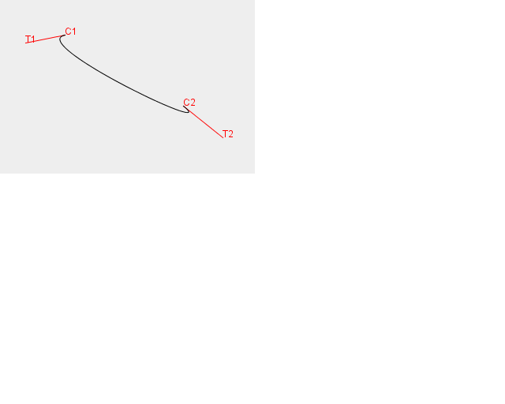

TD5 - Edition de courbes de Bézier
- On souhaire gérer l'édition de courbes de Bézier en permettant à
un individu d'éditer les points de contrôles Ci et les tangentes
associées et caractérisées par Ci et Ti (cf figure ci-dessous). On
suppose que le programme qui dessine les courbes est écrit en java. Le
dessin se fait dans une classe DessinBezier qui hérite de JPanel et qui
dispose d'une méthode pick(int x, int y). Cette méthode
retourne l'élément graphique présent sous le point de coordonnées x, y
s'il en est et sinon la méthode retourne null. Un élément graphique peut être:
- une courbe
- un point de contrôle (par exemple C1)
- un point permettant la définition de la tangente (par exemple T1).
- Ecrire le gestionnaire d'évènement qui permettra de gérer les interactions suivantes:
- Rendre visible les points de contrôle lorsqu'on clique sur la courbe une première fois.
- Déplacer un point de contrôle lorsque l'on clique dessus et
que l'on déplace la souris en maintenant le bouton enfoncé. Les
tangentes se déplacent alors parallèles à elles mêmes.
- Déplacer l'extrémité d'une tangente lorsqu'on clique dessus et
que l'on déplace la souris en maintenant le bouton enfoncé. Le point
de contrôle reste quant à lui immobile.
- L'ajout d'un point de contrôle lorsqu'on clique sur la courbe alors que les points de contrôle sont visibles.
NB: un diagramme état-transition peut permettre de spécifier les interactions avant de les implémenter.
